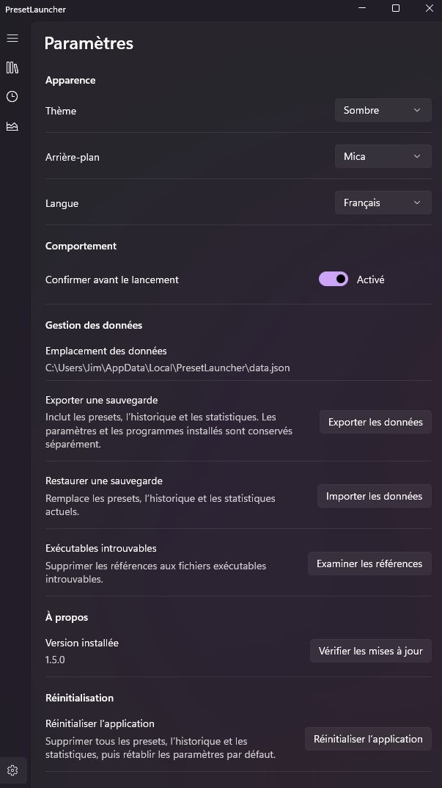

Capture indisponible
Historique des lancements
Les lancements complets sont enregistrés avec leurs résultats. L’historique permet de retrouver les programmes en échec.
Ouvrez vos applications Windows ensemble, en un clic.

Capture indisponible
Les presets regroupent les programmes utilisés ensemble, avec un ordre de lancement configurable.
Lancement complet ou limité aux programmes qui ne sont pas déjà ouverts.
Délais, ordre de lancement et droits administrateur configurables.
Historique des lancements et statistiques d’utilisation.
Export et restauration des données au format JSON.
Capture indisponible
Les lancements complets sont enregistrés avec leurs résultats. L’historique permet de retrouver les programmes en échec.

Capture indisponible
Ordre, délais et droits administrateur par programme ; préférences d’apparence, données locales et sauvegardes JSON.
Développé en C# avec .NET et WinUI 3. Les contributions et retours sont les bienvenus.